First-install onboarding review
Real Phone Sense screens captured from a disposable Pixel 10a emulator. Images are unedited Android Debug Bridge screenshots; select any image to open it at full resolution.
Capture conditions. No usage or goal history was seeded. The initial Home value is the usage collected during this walkthrough. The second clean-data pass kept system usage access enabled only so the dark notification skip branch could be reached directly.
Required usage access

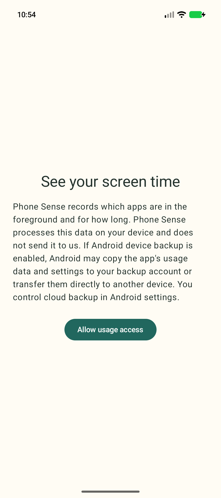

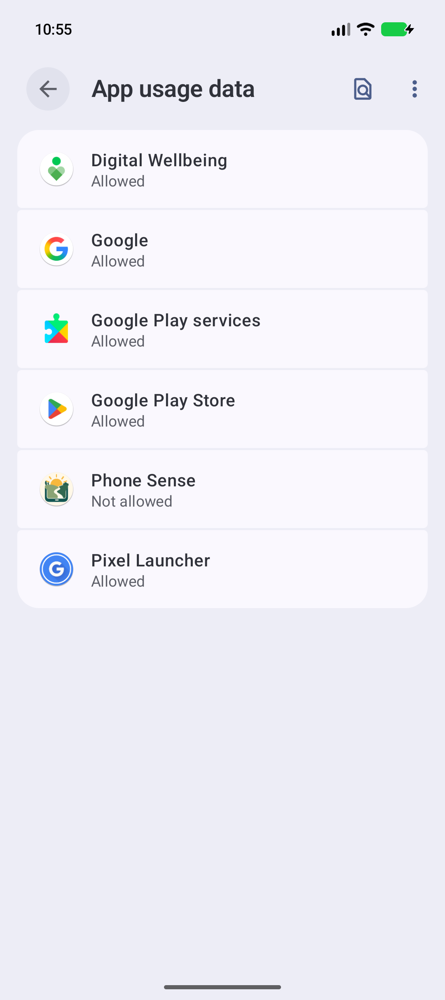

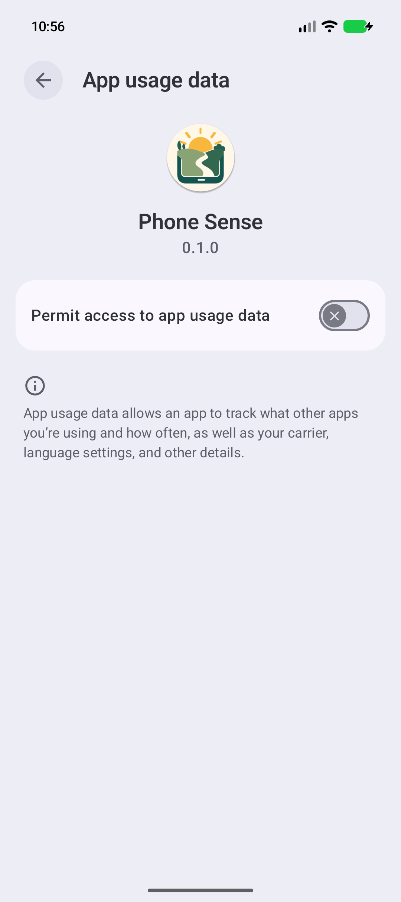

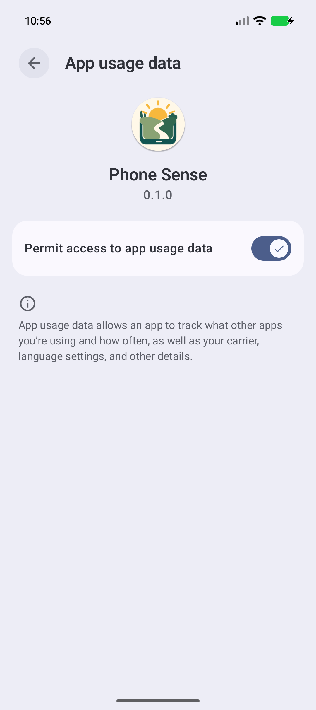
Notification branches

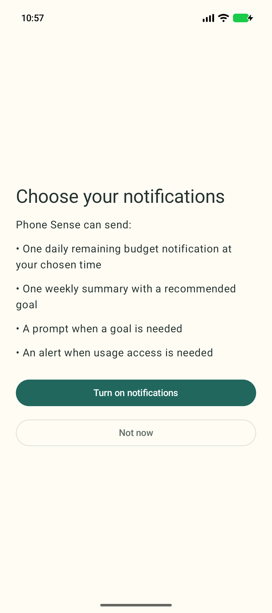

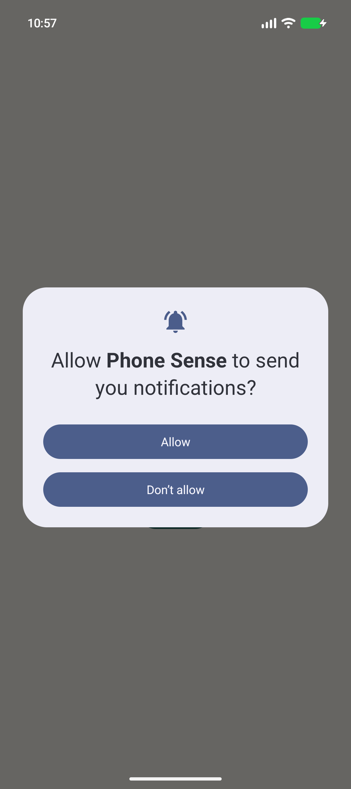

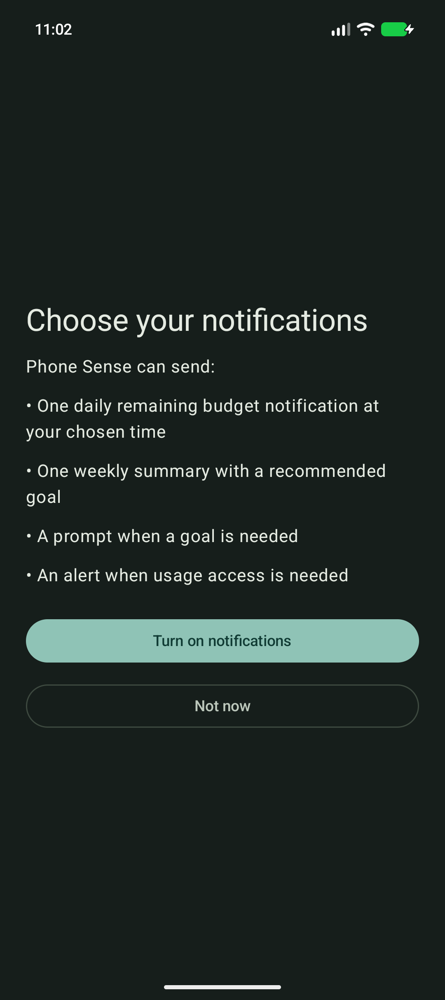

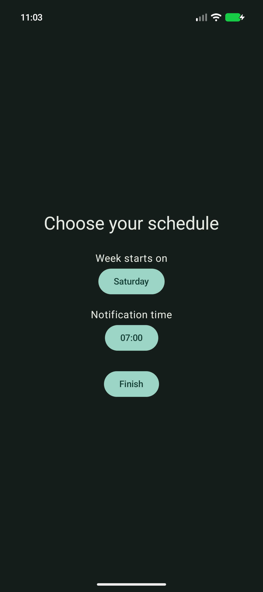
Schedule and pickers

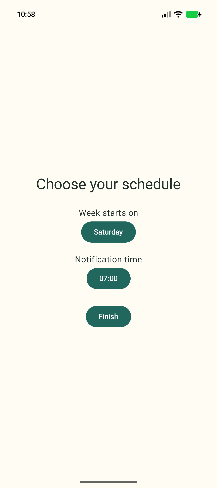

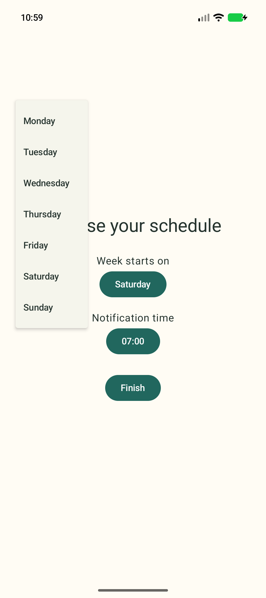

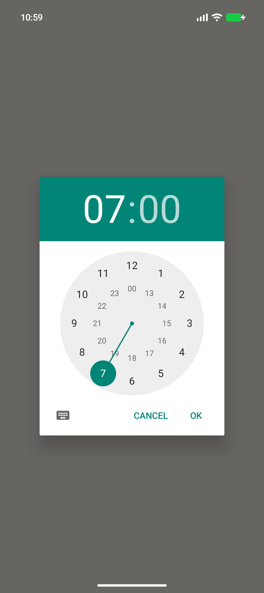
Fresh Home and first goal

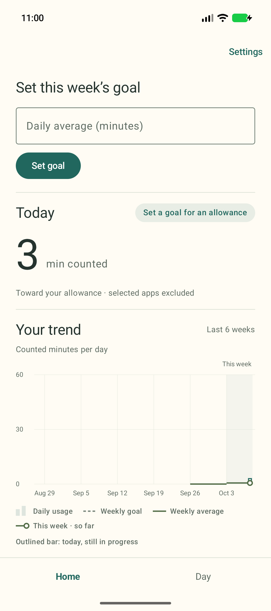

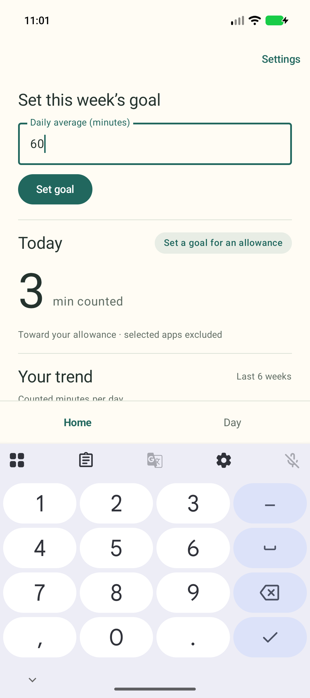

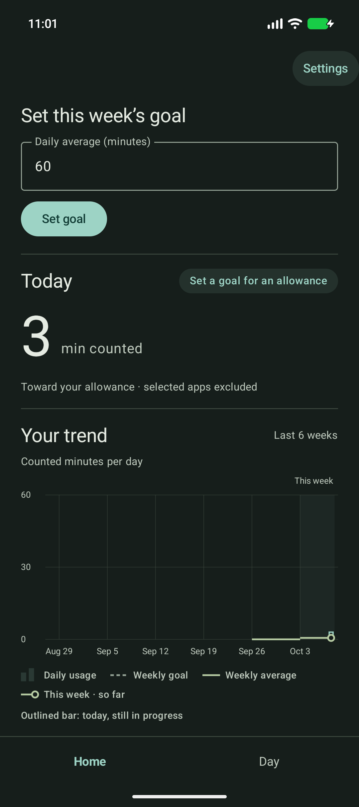
Owner review notes
- The week-start menu appears against the upper-left edge and overlaps the “Choose your schedule” title, visually detached from the button that opened it.
- Android’s usage-access explanation mentions carrier, language, and other details beyond the app’s narrower explanation. The handoff may feel more alarming than the preceding copy prepares users for.
- Notification denial and “Not now” both move straight to schedule setup without a brief acknowledgement of the choice or how to change it later.
- A fresh Home can already contain a small non-zero total because time spent in Android settings during onboarding is real foreground usage.
Older Android behavior
Android 12L and earlier do not show the runtime notification-permission dialog introduced in Android 13. On those versions, “Turn on notifications” creates notification channels and proceeds directly to the schedule step. Usage-access labels, list layout, toggle presentation, and time-picker styling are system interfaces and vary by Android release and device maker; the Phone Sense steps and defaults remain the same.